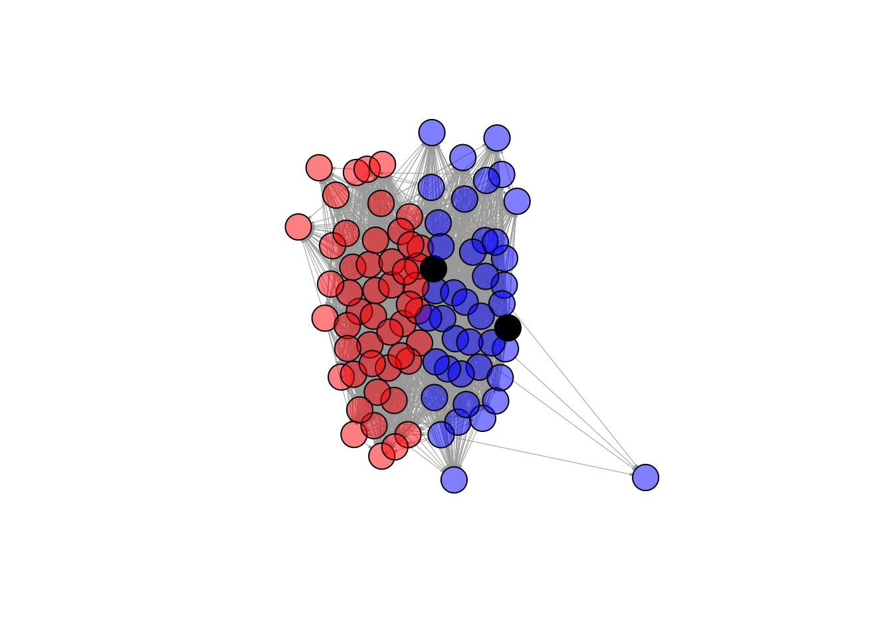

| gender | age | voterturnout |
|---|---|---|
| Male | 18 | 1 |
| Female | 20 | 0 |
| Female | 66 | 1 |
| Male | 44 | 0 |
13 Choose Your Own Adventure
For the final project, you are creating a research project independently.
Below are some tips for working with new data.
How to explore new data
- When you encounter a new dataset, try to also identify the codebook that goes along with it.
- This should have information describing what the variables are in the data and what the values mean.
- It should also help clarify what unit is in each row of a dataset (e.g., is each row a survey respondent, an election, a Member of Congress, a country in a particular year)
- When you download data, identify the file type (e.g., .csv, .dta, .RData)
- Recall that chapter 1 of QSS section 1.3.5 (pg. 20) goes over how to read in different file types in R with functions like
read.csv,read.dtawith thelibrary(foreign)package, etc.
- Recall that chapter 1 of QSS section 1.3.5 (pg. 20) goes over how to read in different file types in R with functions like
- When you load in the data in RStudio, explore it.
- How many rows?
nrow, How many columns?ncol - You can
View()the data or look at the first few rows withhead()- Are most variables numeric? Or, does it seem like you have factor and character variables?
- See if the data seem to match up with what the codebook suggests should be there.
- How many rows?
13.1 How to investigate new data
Real-world data may often require some cleaning or “wrangling”
So you have some data…. AND it’s a mess!!!
A lot of the data we may encounter in courses has been simplified to allow students to focus on other concepts. We may have data that look like the following:
nicedata <- data.frame(gender = c("Male", "Female", "Female", "Male"),
age = c(18, 20, 66, 44),
voterturnout = c(1, 0, 1, 0))In the real world, our data may hit us like a ton of bricks, like the below:
uglydata <- data.frame(VV160002 = c(2, NA, 1, 2),
VV1400068 = c(18, 20, 66, 44),
VV20000 = c(1, NA, 1, NA))| VV160002 | VV1400068 | VV20000 |
|---|---|---|
| 2 | 18 | 1 |
| NA | 20 | NA |
| 1 | 66 | 1 |
| 2 | 44 | NA |
A lot of common datasets we use in the social sciences are messy, uninformative, sprawling, misshaped, and/or incomplete. What do I mean by this?
- The data might have a lot of missing values. For example, we may have
NAvalues in R, or perhaps a research firm has used some other notation for missing data, such as a99. - The variable names may be uninformative.
- For example, there may be no way to know by looking at the data, which variable represents gender. We have to look at a codebook.
- Even if we can tell what a variable is, its categories may not be coded in a way that aligns with how we want to use the data for our research question.
- For example, perhaps you are interested in the effect of a policy on people below vs. 65 and over in age. Well, your age variables might just be a numeric variable. You will have to create a new variable that aligns with your theoretical interest.
- Datasets are often sprawling. Some datasets may have more than 1000 variables. It is hard to sort through all of them. Likewise, datasets may have millions of observations. We cannot practically look through all the values of a column to know what is there.
13.1.1 Dealing with Uninformative Variable Names
Hopefully, there is an easy fix for dealing with uninformative variable names. I say “hopefully” because hopefully when you encounter a dataset with uninformative variable names, the place where you downloaded the data will also include a codebook telling you what each variable name means, and how the corresponding values are coded.
Unfortunately, this may not always be the case. One thing you can do as a researcher is when you create a dataset for your own work, keep a record (in written form, on a word document or in a pdf or code file) of what each variable means (e.g., the survey question it corresponds to or the exact economic measure), as well as how the values of the variables are coded. This good practice will help you in the short-term, as you pause and come back to working on a project over the course of a year, as well as benefit other researchers in the long run after you finish your research.
For examples of large codebooks, you can view the 2016 American National Election Study Survey and click on a codebook.
I recommend that once you locate the definition of a variable of interest, rename the variable in your dataset to be informative. You can do this by creating a new variable or overwriting the name of the existing variable. You might also comment a note for yourself of what the values mean.
## Option 1: create new variable
## gender 2=Male, 1=Female
uglydata$gender <- uglydata$VV160002
## Option 2: Overwrite
names(uglydata)[1] <- "gender2"13.1.2 Dealing with Missing Data
When we have a column with missing data, it is best to do a few things:
- Try to quantify how much missing data there is and poke at the reason why data are missing.
- Is it minor non-response data?
- Or is it indicative of a more systematic issue? For example, maybe data from a whole group of people or countries is missing for certain variables.
- If the data are missing at a very minor rate and/or there is a logical explanation for the missing data that should not affect your research question, you may choose to “ignore” the missing data when performing common analyses, such as taking the mean or running a regression.
If we want to figure out how much missing data we have in a variable, we have a couple of approaches:
## Summarize this variable
summary(uglydata$gender) Min. 1st Qu. Median Mean 3rd Qu. Max. NA's
1.000 1.500 2.000 1.667 2.000 2.000 1 ## What is the length of the subset of the variable where the data are missing
length(uglydata$gender[is.na(uglydata$gender) == T])[1] 1If we choose to ignore missing data, this can often be easily accomplished in common operations. For example, when taking the mean we just add an argument na.rm = T:
mean(uglydata$VV1400068, na.rm=T)[1] 37We should always be careful with missing data to understand how R is treating it in a particular scenario.
13.1.3 Dealing with Variable Codings that Aren’t Quite Right
Oftentimes the ways that variables are coded in datasets we get off-the-shelf are not coded exactly as how we were dreaming up operationalizing our concepts. Instead, we are going to have to wrangle the data to get them into shape.
This may involve creating new variables that recode certain values, creating new variables that collapse some values into a smaller number of categories, combining multiple variables into a single variable (e.g., representing the average), or setting some of the variable values to be missing (NA). All of these scenarios may come up when you are dealing with real data.
## create variable indicating over 65 vs. under 65
## approach 1
uglydata$over65 <- NA
uglydata$over65[uglydata$VV1400068 >=65] <- 1
uglydata$over65[uglydata$VV1400068 < 65] <- 0
## approach 2
uglydata$over65 <- ifelse(uglydata$VV1400068 >=65, 1, 0)We can also use the %in% function to help with this recoding process, like we did in the mapping section.
Suppose we want to code people as “milestone age” if they are 18, 21, 40, or 65. We could create a vector of these ages.
milestones <- c(18, 21, 40, 65)Then, we could indicate “milestone” or “not milestone” depending on if someone’s age is in or not in (! %in%) that list.
uglydata$milestoneage <- ifelse(uglydata$VV1400068 %in% milestones, "milestone age", "not milestone age")
table(uglydata$milestoneage)
milestone age not milestone age
1 3 ## approach 2
uglydata$milestoneage <- NA
uglydata$milestoneage[uglydata$VV1400068 %in% milestones] <- "milestone age"
uglydata$milestoneage[!(uglydata$VV1400068 %in% milestones)] <- "not milestone age"
table(uglydata$milestoneage)
milestone age not milestone age
1 3 13.1.4 Dealing with Parts of Datasets
We may also want to limit our analysis to just small parts of datasets instead of the entire dataset. Recall the function subset to limit the data to only rows that meet certain criteria.
## limit data to those over 65
over65 <- subset(uglydata, over65 == 1)We can also trim the dataset to include only certatin columns. There are many ways to do this. Here is one, using our subset function with the select argument:
## include all rows but only these 2 columns
onlythesecolumns <- subset(uglydata,
select = c(gender,
over65))
head(onlythesecolumns) gender over65
1 2 0
2 NA 0
3 1 1
4 2 013.2 Where to Go Next
Recall that we said, four primary goals of social science include:
- Describe and measure
- Has the U.S. population increased?
- Explain, evaluate, and recommend (study of causation)
- Does expanding Medicaid improve health outcomes?
- Predict
- Who will win the next election?
- Discover
- How do policies diffuse across states?
In this course, we have explored a taste of each of these goals, while learning a bit of R code and statistics along the way.
- We described trends in voter turnout, tolerance for domestic violence in different parts of the world
- We estimated the causal effect of experiments to test for discrimination in the labor market, the effect of social status messages on attitudes toward economic policy, and the implementation of wind turbines on electoral support
- We predicted the outcomes of future elections, whether someone is a campaign donor, and questioned the fairness of using these types of “machine learning” models in real-world settings, such as on social media platforms or in the criminal justice system
- We discovered patterns in political speeches, such as the State of the Union and country constitutions, and we visualized geographic diffusion of policies and international terrorist incidents.
This section will provide a few ideas of ways you can continue your learning about data science and its use within social science.
13.2.1 Network Analysis
One topic we do not cover in great depth is the use of network analysis in social science.
Networks can be a really interesting topic to study in political science and other social sciences because they are inherently “social.”
- Networks describe the relationships between people, countries, institutions, etc. instead of evaluating each in isolation.
- Similar to our section on mapping, with networks, we often visualize the interconnectedness using graphics
Network analysis may be particularly useful in an area like international relations where scholars try to identify relationships between states.
- For example, some scholars map international trade networks.
- This paper by Dotan Haim (2016) explores how the nature of shared political alliances influences the amount of trade.
We are going to look at an example of a network of Twitter following among U.S. Senators, following the application of network analysis in QSS 5.2.
In R, we can use the igraph package to visualize networks.
install.packages("igraph")To use the package, we open it with library().
library(igraph)We can look at a network of which U.S. senators follow each other on Twitter, based on data from QSS chapter 5. Let’s open the network data.
twitter <- read.csv("https://raw.githubusercontent.com/ktmccabe/teachingdata/main/twitter-following.csv")
head(twitter) following followed
1 SenAlexander RoyBlunt
2 SenAlexander SenatorBurr
3 SenAlexander JohnBoozman
4 SenAlexander SenJohnBarrasso
5 SenAlexander SenBennetCO
6 SenAlexander SenDanCoatsNote that the data include two columns:
following: Twitter screen name of the senator that is following the senator in the second columnfollowed: Twitter screen name of the senator that is being followed by the senator in the first column
Twitter represents a “directed” network. This means that a “tie” between two individuals has a direction. Take, for, instance, the difference between Facebook friendship and Twitter following.
- On Facebook, when you become friends with another user, you both are considered friends with each other. There is no directionality to the relationship in that space. This is “undirected.”
- In contrast, on Twitter, you can follow someone with/without that person following you. This is “directionality” meaning that we have to indicate specifically in which direction/both directions the connection exists between users.
We are going to create a second dataframe which is called an “adjacency matrix” which indicates the presence or absence and direction of “ties” between each user. QSS pg. 212 describes how you can convert the simple list of follows we had into this type of matrix, and we will follow a slightly different process using the function graph_from_data_frame. We load a dataframe that contains information about each senator where the first column includes the screen names, just like the other dataframe.
senator <- read.csv("https://raw.githubusercontent.com/ktmccabe/teachingdata/main/twitter-senator.csv")twitteradj <- graph_from_data_frame(d=twitter, vertices=senator, directed=T)
twitteradj[1:6, 1:6]6 x 6 sparse Matrix of class "dgCMatrix"
Lamar Alexander Roy Blunt Barbara Boxer Sherrod Brown
Lamar Alexander . 1 . .
Roy Blunt 1 . . .
Barbara Boxer . . . 1
Sherrod Brown . . 1 .
Richard Burr . 1 . .
Tammy Baldwin 1 1 1 1
Richard Burr Tammy Baldwin
Lamar Alexander 1 .
Roy Blunt 1 .
Barbara Boxer . 1
Sherrod Brown . 1
Richard Burr . .
Tammy Baldwin 1 .We are going to visualize the network. To make it more informative, we will color the plot according to the partisanship of senators. Because our senate dataframe is in the same order as the adjacency matrix, we can do the following:
col <- NA
col[senator$party == "R"] <- rgb(1,0,0, alpha=.5)
col[senator$party == "D"] <- rgb(0,0,1, alpha=.5)
col[senator$party == "I"] <- "black"We can now use the plot function with our matrix.
plot(twitteradj,
vertex.color = col,
vertex.label = NA,
edge.arrow.size = 0.1,
edge.width = 0.5)
What do you notice about this network visualization?
- What is easy to see from this? What is hard to see from this? What other information would you like to know?
Polarization is pretty rampant in American Politics. Recently, a set of political scientists used network analysis to explore just how far polarization pervades into our lives, even when we are engaging in tasks and hobbies unrelated to politics. Stiene Praet and co-authors assess whether the Facebook likes of individuals in political vs. non-political lifestyle domains appear polarized. Fortunately, they do not find severe polarization in less political arenas. You may think you know everything about someone based on their food, exercise, and tv habits, but we are not fully polarized in those domains … yet.

While these visuals gives us a little information, there is far more you can do with networks to better quantify the shape of the network and information about which units are most connected and most central to a network.
- Explore QSS Chapter 5.2 to learn more about betweenness, centrality, closeness and degree
- The data described in the chapter can be downloaded here
- For more on network visualization and analysis, you can also explore Professor Katherine Ognyanova’s website (School of Communication and Information), which has multiple tutorials about network analysis in R that you can download here
13.2.2 Additional Topics to Explore
Recall that in the beginning of the semester we looked at the venn diagram of data science from Drew Conway. Throughout the semester, we have answered substantive research questions in political science using data science approaches. We have developed our R skills, and used a little bit of math and statistics. As you go forward, you may want to add additional skills and training.

Self-Study Options
To gain additional math and statistics skills to support what you have done so far, you can review Chapter 6 of QSS for self-study. It focuses on probability. We already covered some aspects of Chapter 7 of QSS on uncertainty, but you could also review these sections as well to gain more experience with the underlying mathematical calculations that go into calculating standard errors and constructing confidence intervals.
If you want to continue to practice R outside of QSS, here are two online books to consider:
For more examples of research at the intersection of data science and social science, you can continue also to read from Bit by Bit by Matt Salganik. We read excerpts of this in the course.
Course Options
If you would like to continue studying quantitative social science, you might also consider taking courses that count toward the following programs.
- Certificate in Quantitative Political Science Methods
- These include undergraduate courses in statistics, political science research methods, and other methods classes in the social sciences
- These also could include doctoral level classes in political science focused on quantitative methods, experiments, game theory, and measurement
- Data Science Certificate/Minor
- In these classes, you may expand your data wrangling, collection, and programming skills and apply them to a wide range of domains.
In addition, one way to practice your skills is to complete an undergraduate thesis during your senior year.